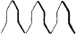

Champaine, (1) Champaine(corrupted by some writers to Champion), otherwise urdé and warriated: is an embattled line, but with the top and bottom of each division pointed instead of square, and so resembling somewhat the line usually drawn in vair. It occurs, though rarely, as a line of partition.
Purpure, a bend champaine argent--ARCHBY,
Argent, a pale champaine vert--BOWMAN.
Bendy of six champaine purple and argent--BOWBRIDGE.
Gyronny of four champaine or, enarched argent and gules--BRAUNECK.
(2) The term Point Champaine, or Champion(q.v.) also is used. It is included in the forms of Abatement.